# Install packages if not already installed
install.packages(c(
"tidyclust",
"cluster",
"factoextra"
))
library(tidyverse) # Data manipulation and visualisation
library(tidymodels) # Modelling framework
library(tidyclust) # Clustering extension for tidymodels
library(cluster) # Silhouette computation
library(factoextra) # Silhouette visualisation
library(patchwork) # Combining plots side by side28 Tutorial 11: Unsupervised Machine Learning in R
Workshop 8 focussed on how we develop supervised machine learning models in R using the tidymodels package (create a recipe, specify a model, bundle a workflow, and fit) which we can use when our data has labels: where we know what each grouping should be.
But what happens when we don’t know this?
This is when we use unsupervised machine learning, which aims to discover patterns or structures in the data without prior knowledge of the groupings. We have already come across Multidimensional Scaling (MDS) plots in workshop 7, and you may have encountered Principal Components Analysis (PCA), k-means clustering or hierarchical clustering in your research so far.
In this tutorial, we will reuse the same workflow concepts you learned in Workshop 8 (recipe → model → workflow → fit), but apply them to an unsupervised task: k-means clustering with the tidyclust package.
TipLearning Objectives
This workshop directly builds on Workshop 8. At the end of this session, learners should be able to:
- Understand the difference between supervised and unsupervised machine learning and explore their applications in biomedical research.
- Construct a complete
tidymodelsworkflow: create a recipe, specify a model, bundle a workflow, to train a k-means clustering algorithm. - Fit a k-means model, inspect centroids, and assign cluster predictions to observations
- Evaluate clusters against known biological groupings
The key difference between supervised and unsupervised machine learning in our current tidymodels workflow is shown in the figure below:
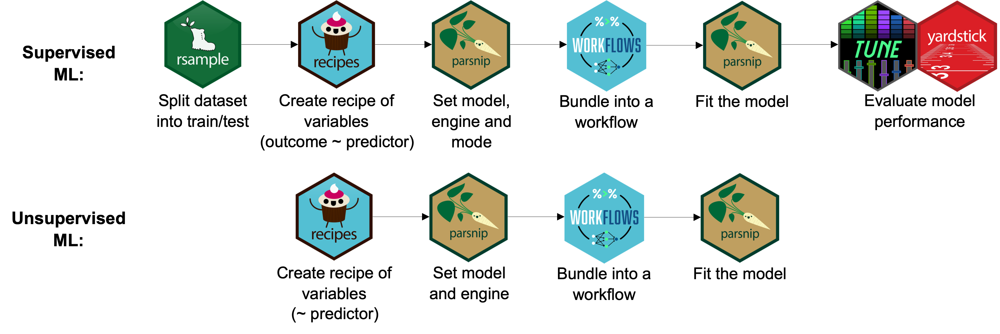
For supervised ML, the pipeline we followed included splitting our dataset into a training and testing dataset, our recipe contained both an outcome and predictor variable/s, we set the model (e.g., random forest), engine (R package) and mode (classification or regression), bundled the workflow, fit the model and then evaluated model performance.
For unsupervised ML, the pipeline differs in that we will not be splitting our dataset into train/test sets, our recipe does not need an outcome predictor variable (as we do NOT know the outcome), we set the model (e.g., k-means clustering), engine (R package) and do not need to set a mode, bundle the workflow and fit the model.
We cannot explicitly evaluate model performance in the same way because there are no labels to measure against. Instead there are other, relative, measures we can employ to test how well our model performs. One such measure is the silhouette score, which measures cluster geometry (how compact and well-separated the clusters are) rather than correctness. It is as a way to compare results, like different values of k, not whether the clustering is “correct”. This still requires biological prior knowledge. You can read more about the silhouette scores and plots in the extension section below.
28.1 Setup
Save into your data/ directory.
noisy_dosage <- read_csv(
"data/noisy_mousezempic_dosage_data.csv"
)Rows: 333 Columns: 7
── Column specification ────────────────────────────────────────────────────────
Delimiter: ","
chr (3): mouse_strain, sex, cage_number
dbl (4): weight_lost_g, drug_dose_g, tail_length_mm, initial_weight_g
ℹ Use `spec()` to retrieve the full column specification for this data.
ℹ Specify the column types or set `show_col_types = FALSE` to quiet this message.Or you can run the code below to download the dataset from a URL:
noisy_dosage <- read_csv(
"https://raw.githubusercontent.com/WEHI-Education/BIOL90042_R_Course/refs/heads/main/data/noisy_mousezempic_dosage_data.csv"
)28.2 K-Means Clustering with tidyclust
Using our noisy_dosage dataset, our aim is to apply an unsupervised machine learning model to cluster mouse strains based on physiological and dosage features only.
For this tutorial, we will be training a k-means clustering model.
NoteWhat is a k-means clustering algorithm?
Let’s work through an example used in the lecture.
You’re opening three new coffee shops in a city and want to know where the best place is for students to gather. You have data showing where 100 students like to hang out. How do you decide the best locations?
Because you’re a coding expert, you decide to use a k-means clustering algorithm to solve this by finding three natural “meeting spots” in your data.
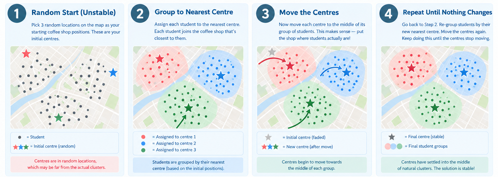
- Pick three (k = 3) random locations on the map as your starting coffee spot positions. These are your initial centres.
- Assign each student to the nearest centre based on their location to the initial centres.
- Move the centre to the middle of each group of students. This creates a new centre which is more representative of where students are.
- Repeat from step 2 until nothing changes. When the centres are stable, it means that you have found the natural meeting spot you’re after!
K-means clustering algorithms are iterative and repeatedly ask: 1. Who belongs to each group? 2. Where should each group’s centre be? 3. Repeat until stable: this leads us to the best possible solution
Note: Alternatively you could work through this process by asking: how many coffee shops would fit for this cohort of 100 students? This would require the use of tuning the k parameter to see how many coffee shops would best suit this dataset. You can read more on how to do this in our extension sections below.
28.2.1 Prepare the Data
In this tutorial we apply unsupervised learning to the noisy_mousezempic_dosage_data dataset, but this time pretending we do not know the strain labels.
The noisy_mousezempic_dosage_data dataset contains measurements for 344 mice across three strains (CD1, BALBc, and Black6) housed across three cages.
NoteBiological Prior: How Many Clusters Should We Expect?
The best results will be obtained with prior knowledge of the optimal cluster number (k).
For the mousezempic dataset, we have a clear biological prior: there are 3 known strains: CD1, BALBc, and Black6. This gives us a strong reason to expect k = 3 to be the most biologically meaningful solution, so we set k = 3 directly in our model. An optional extension later in this session uses silhouette analysis, a data-driven approach, to confirm or challenge this prior.
We are going to explicitly keep only the numeric physiological features of our dataset and remove any missing values. Strain labels are deliberately excluded as we are aiming to use unsupervised learning: we do not want to inform the algorithm about strain identity.
dosage_clust <- noisy_dosage %>%
# remove all NAs in our dataset
drop_na() %>%
# keep only the numeric physiological features of our dataset
select(initial_weight_g, tail_length_mm, drug_dose_g, weight_lost_g)
# view our dataset features (dplyr equivalent of `str()`)
glimpse(dosage_clust)Rows: 333
Columns: 4
$ initial_weight_g <dbl> 37.73726, 34.05431, 34.61283, 36.60167, 38.57718, 24.…
$ tail_length_mm <dbl> 19.10480, 17.09409, 19.11909, 21.29026, 19.57997, 17.…
$ drug_dose_g <dbl> 0.002022930, 0.001912894, 0.001662365, 0.001738820, 0…
$ weight_lost_g <dbl> 3.298696, 3.614657, 4.505097, 3.506774, 3.754105, 5.0…28.2.2 Explore the Data
Let’s visualise the raw data by plotting initial weight (initial_weight_g) against drug dose (drug_dose_g).
dosage_clust %>%
ggplot(aes(x = initial_weight_g, y = drug_dose_g)) +
geom_point(size = 2.5, alpha = 0.8) +
labs(
title = "Mouse Initial Weight vs Drug Dose",
x = "Initial Weight (g)",
y = "Drug Dose (g)"
)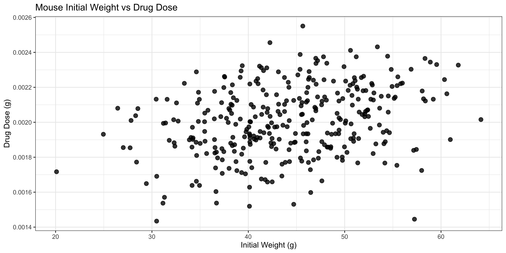
Here we can see varying initial weights and drug doses across the n = 333 mice remaining in our dataset — but the points form essentially one large grouping, with no obvious subgroups.
NoteActivity: Can You Find the Hidden Groups?
Our biological prior tells us there are 3 strains in this data, yet the plot above shows only one cloud of points. Our dataset has four numeric variables (initial_weight_g, tail_length_mm, drug_dose_g, and weight_lost_g), so maybe a different pair of variables will reveal the groupings.
Modify the plotting code below to explore different pairs of variables (there are 6 possible pairs in total). For each plot, ask yourself: can I see any distinct clusters?
# Try swapping in different variables, e.g. tail_length_mm vs weight_lost_g
dosage_clust %>%
ggplot(aes(x = initial_weight_g, y = drug_dose_g)) +
geom_point(size = 2.5, alpha = 0.8)
ImportantTest Your Knowledge
1. After plotting different pairs of variables, how many clear groupings could you identify in any of the two-dimensional plots?
✔None: every pair looks like one big cloud of points
✗Two: initial weight vs drug dose clearly shows two groups
✗Three: the three strains are visible in at least one pair of variables
✗Four: each cage forms its own visible cluster
Solutions
- Correct! No pair of variables shows clear, separated groups. Every two-dimensional plot looks like one large cloud. This illustrates a key limitation of exploring data in two dimensions. The groupings may only become apparent when all four variables are considered together, in the full four-dimensional feature space. This is exactly where unsupervised ML techniques can help.
- Incorrect: initial weight vs drug dose forms a single cloud.
- Incorrect: the strains are not clearly separable in any single pair of variables; that is precisely why we need clustering.
- Incorrect: no pair of variables reveals distinct cage or strain clusters.
28.2.3 Define a Preprocessing Recipe
Recall from Workshop 8 that a recipe specifies the variables to include in the model and the preprocessing steps to apply, expressed as a statistical formula: outcome variable ~ predictor variables .
There is one key difference here from the supervised case: in unsupervised learning, we have no outcome variable because we do not know the class labels. Our recipe formula is therefore ~ . (no outcome, all predictors).
As we saw in our figure above, the x- and y-axes are on markedly different scales. As in Workshop 8, we normalise the data to place all variables on a common scale where the mean = 0 and standard deviation = 1.
NoteWhy is normalisation essential for k-means?
K-means clustering assigns observations to clusters based on Euclidean distance, the straight-line distance between points in feature space. If one variable is measured in grams (thousands) and another in millimetres (tens), the gram variable will dominate the distance calculation, regardless of its biological relevance. Normalisation removes this scale bias.
Just like in workshop 8, we first initialise our k-means clustering algorithm by defining our recipe and add any pre-processing steps. Here, we are going to normalise all of our numeric predictors just like in our workshop. Note because we removed all categorical predictor variables, we do not need to apply the step_dummy() function to categorical (nominal) variables.
kmeans_recipe <- recipe(~., data = dosage_clust) %>%
step_normalize(all_numeric_predictors())
summary(kmeans_recipe)# A tibble: 4 × 4
variable type role source
<chr> <list> <chr> <chr>
1 initial_weight_g <chr [2]> predictor original
2 tail_length_mm <chr [2]> predictor original
3 drug_dose_g <chr [2]> predictor original
4 weight_lost_g <chr [2]> predictor original28.2.4 Specify the K-Means Model
Now that we have our recipe, we can specify our model using the k_means() function from tidyclust . We set our engine (set_engine()) to "stats" , which uses base R’s built-in kmeans() function. We do not need to set a mode here because we are doing unsupervised ML (whereas for supervised ML, we need to specify "regression" or "classification").
Setting num_clusters = 3 fixes the number of clusters up front, using our biological prior of three known strains. (An optional extension below shows how to choose k from the data instead, using silhouette tuning.)
Setting nstart = 25 runs the algorithm 25 times with different random centroid initialisations and keeps the best result. This is important because k-means is sensitive to where the centroids start.
WarningWhat is a centroid? And why does it need to be initialised?
A centroid is the point at the center of a cluster: you can think of it as the cluster’s “address”.
K-means has to start somewhere, so it begins by placing the centroids at random positions. It then gradually moves them to better positions, step by step, until they settle. The catch is that where they start affects where they end up: an unlucky random start can lead to a poor final clustering, even with the same data.
To avoid relying on luck, we simply run the algorithm many times from different random starts and keep the best result. That is exactly what nstart = 25 does below: it runs k-means 25 times and keeps the run where the points are tightest around their centroids.
kmeans_spec <- k_means(num_clusters = 3) %>% # our model
set_engine("stats", nstart = 25) # our engine
kmeans_specK Means Cluster Specification (partition)
Main Arguments:
num_clusters = 3
Engine-Specific Arguments:
nstart = 25
Computational engine: stats 28.2.5 Bundle into a Workflow
Just as in Workshop 8, we combine the recipe and model into a single workflow object, so that the same preprocessing steps are always applied consistently whenever the model is fitted or used to predict.
kmeans_workflow <- workflow() %>%
add_recipe(kmeans_recipe) %>%
add_model(kmeans_spec)
kmeans_workflow══ Workflow ════════════════════════════════════════════════════════════════════
Preprocessor: Recipe
Model: k_means()
── Preprocessor ────────────────────────────────────────────────────────────────
1 Recipe Step
• step_normalize()
── Model ───────────────────────────────────────────────────────────────────────
K Means Cluster Specification (partition)
Main Arguments:
num_clusters = 3
Engine-Specific Arguments:
nstart = 25
Computational engine: stats
TipExtension: Choosing k with a Data-Driven Approach (Silhouette Tuning)
In the main workflow we set num_clusters = 3 directly from our biological prior. But what if we did not know how many groups to expect? The silhouette score offers a data-driven way to choose k: it measures how well each observation fits its assigned cluster relative to neighbouring clusters. This extension shows two routes — a quick one-liner, and the full tidymodels tuning approach.
28.2.5.1 A quick route: fviz_nbclust()
The silhouette score is computed from pairwise Euclidean distances between mice — the same distances k-means uses. Just as in our recipe, those distances must be computed on normalised data, otherwise the variable with the largest units dominates. Rather than scaling by hand, we extract exactly the normalised data the model saw from our fitted recipe using prep() + bake():
# Extract the scaled data from the fitted recipe
scaled_data <- kmeans_recipe %>%
prep() %>%
bake(new_data = dosage_clust)
# Try a range of k values and plot the average silhouette for each
fviz_nbclust(scaled_data, kmeans, method = "silhouette")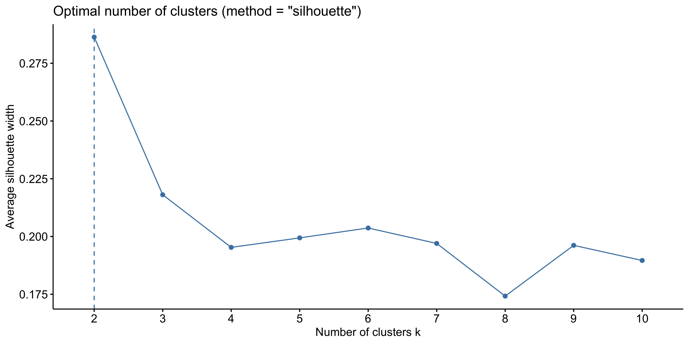
28.2.5.2 The full route: tuning over values of k with tune_cluster()
The full route uses the same tune_*() machinery you saw for supervised models in Workshop 8. To use it, we would change our model specification to k_means(num_clusters = tune()). Here we evaluate k from 2 to 8 clusters. We cap at 8 as there is no biological reason to expect more than a small number of morphologically distinct mouse groups. Recall that our biological prior suggests k = 3 (three strains).
# A tuning version of our specification and workflow:
# num_clusters is now a placeholder to be tuned, not fixed at 3
kmeans_spec_tune <- k_means(num_clusters = tune()) %>%
set_engine("stats", nstart = 25)
kmeans_workflow_tune <- workflow() %>%
add_recipe(kmeans_recipe) %>%
add_model(kmeans_spec_tune)
kmeans_grid <- tibble(num_clusters = 2:8)We create 10 bootstrap resamples of the data to obtain more stable silhouette estimates. We then tune the workflow across all values of k, collecting the silhouette_avg metric: a measure of how well each observation fits its assigned cluster relative to neighbouring clusters.
# Insert a seed because this step involves randomness!
set.seed(123)
kmeans_resamples <- bootstraps(dosage_clust, times = 10)
kmeans_tuning <- tune_cluster(
kmeans_workflow_tune,
resamples = kmeans_resamples,
grid = kmeans_grid,
metrics = cluster_metric_set(silhouette_avg)
)! Bootstrap01: internal: `finalize_workflow_preprocessor()` was deprecated in tune 2.1.0.collect_metrics(kmeans_tuning)# A tibble: 7 × 7
num_clusters .metric .estimator mean n std_err .config
<int> <chr> <chr> <dbl> <int> <dbl> <chr>
1 2 silhouette_avg standard 0.294 10 0.00445 Preprocessor1_Mode…
2 3 silhouette_avg standard 0.235 10 0.00315 Preprocessor1_Mode…
3 4 silhouette_avg standard 0.220 10 0.00420 Preprocessor1_Mode…
4 5 silhouette_avg standard 0.221 10 0.00393 Preprocessor1_Mode…
5 6 silhouette_avg standard 0.226 10 0.00370 Preprocessor1_Mode…
6 7 silhouette_avg standard 0.231 10 0.00297 Preprocessor1_Mode…
7 8 silhouette_avg standard 0.233 10 0.00253 Preprocessor1_Mode…We now have an averaged silhouette estimate for each value of k, where values range from -1 (misclassified) to +1 (well-clustered). A score > 0.5 generally indicates reasonable cluster structure.
28.2.5.3 Silhouette Plot Across k
We can visualise the mean silhouette width for each value of k using ggplot2 . The red dashed line marks our biological prior of k = 3, allowing us to assess whether the data-driven optimum agrees with our prior knowledge.
kmeans_tuning %>%
collect_metrics() %>%
filter(.metric == "silhouette_avg") %>%
ggplot(aes(x = num_clusters, y = mean)) +
geom_line(colour = "steelblue", linewidth = 1) +
geom_point(colour = "steelblue", size = 3) +
# extra things we can add to our silhouette plot
geom_errorbar(
aes(ymin = mean - std_err, ymax = mean + std_err),
width = 0.2,
alpha = 0.6
) +
geom_vline(
xintercept = 3,
linetype = "dashed",
colour = "firebrick",
linewidth = 0.8
) +
scale_x_continuous(breaks = 2:8) +
labs(
title = "Average Silhouette Width by Number of Clusters",
x = "Number of Clusters (k)",
y = "Mean Silhouette Width"
)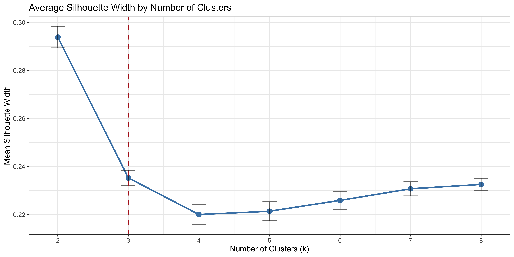
TipInterpreting the silhouette plot
The silhouette score ranges from -1 (poor, misassigned points) to +1 (optimal, well-separated clusters). In this analysis, the silhouette is actually maximised at k = 2, not at our biological prior of k = 3. This is a common and instructive result: the silhouette criterion rewards well-separated clusters, so when two groups lie close together in feature space it prefers to merge them. Here, k = 2 largely lumps BALBc and CD1 mice into a single cluster while separating Black6 mice. That is a worse biological solution even though it scores better geometrically.
This is why the silhouette score should inform, not dictate, the choice of k. With a strong biological prior of three known strains, we select k = 3. Its silhouette remains positive (~0.2), indicating that the three-cluster solution still captures real structure: just with two strains that partially overlap.
ImportantTest Your Knowledge
2. What does a silhouette score of 0 indicate for an observation?
✗The observation is perfectly assigned to its cluster
✔The observation lies on the boundary between two clusters
✗The observation has been misassigned to the wrong cluster
✗The observation is an outlier
Solutions
- A score of +1 indicates perfect assignment. A score of 0 means something different.
- Correct! A silhouette score of 0 means the observation is equally close to its own cluster and the nearest neighbouring cluster — it sits right on the decision boundary.
- Misassignment is indicated by a negative silhouette score, not zero.
- Outliers may have low silhouette scores, but a score of 0 specifically indicates a boundary observation.
28.2.5.4 Using the Best k from Tuning
But what if we wanted to use the data-driven optimum instead (i.e., the silhouette maximum of k = 2)? We can use this code to do just that!
# Pull out the value of k with the highest mean silhouette (here, k = 2)
best_k_datadriven <- select_best(kmeans_tuning, metric = "silhouette_avg")
# Insert that value into the tuning workflow, replacing tune()
final_kmeans_workflow <- finalize_workflow_tidyclust(
kmeans_workflow_tune,
best_k_datadriven
)
final_kmeans_workflow══ Workflow ════════════════════════════════════════════════════════════════════
Preprocessor: Recipe
Model: k_means()
── Preprocessor ────────────────────────────────────────────────────────────────
1 Recipe Step
• step_normalize()
── Model ───────────────────────────────────────────────────────────────────────
K Means Cluster Specification (partition)
Main Arguments:
num_clusters = 4
Engine-Specific Arguments:
nstart = 25
Computational engine: stats We could then fit this workflow with fit(final_kmeans_workflow, data = dosage_clust) and continue exactly as in the next section. This finalise-then-fit pattern is the standard way to use tuning results in tidymodels.
28.2.6 Fit the Final K-Means Model
Because we set num_clusters = 3 directly in our model specification, there is no finalisation step — we can fit kmeans_workflow on our dosage_clust dataset as it is.
set.seed(5947)
final_kmeans_fit <- kmeans_workflow %>%
fit(data = dosage_clust)
TipInspecting Centroids
Cluster centroids are reported in scaled units (because we applied step_normalize() in the recipe). Each row represents the centre of one cluster in the normalised feature space.
extract_centroids(final_kmeans_fit)# A tibble: 3 × 5
.cluster initial_weight_g tail_length_mm drug_dose_g weight_lost_g
<fct> <dbl> <dbl> <dbl> <dbl>
1 Cluster_1 -0.923 0.148 -0.732 -0.769
2 Cluster_2 0.452 0.731 -0.181 -0.0467
3 Cluster_3 0.482 -0.804 0.871 0.785 We can now predict which cluster each individual mouse belongs to. This is done on a per-row basis using predict() .
dosage_predicted_clusters <- predict(
final_kmeans_fit,
new_data = dosage_clust
)We then bind our cluster predictions back to the original (unscaled) data using bind_cols() .
dosage_clustered <- noisy_dosage %>%
bind_cols(dosage_predicted_clusters)
head(dosage_clustered, 10)# A tibble: 10 × 8
mouse_strain weight_lost_g drug_dose_g tail_length_mm initial_weight_g sex
<chr> <dbl> <dbl> <dbl> <dbl> <chr>
1 CD1 3.30 0.00202 19.1 37.7 male
2 CD1 3.61 0.00191 17.1 34.1 female
3 CD1 4.51 0.00166 19.1 34.6 female
4 CD1 3.51 0.00174 21.3 36.6 female
5 CD1 3.75 0.00187 19.6 38.6 male
6 CD1 5.01 0.00193 17.2 25.0 female
7 CD1 5.05 0.00194 20.4 44.9 male
8 CD1 2.18 0.00191 16.5 42.5 female
9 CD1 3.25 0.00204 21.4 51.8 male
10 CD1 4.04 0.00221 17.2 38.3 male
# ℹ 2 more variables: cage_number <chr>, .pred_cluster <fct>Now let’s cross-tabulate the cluster assignments against the true strain labels. This reveals how well the unsupervised algorithm recovers the known biological groupings without ever seeing the strain labels.
table(dosage_clustered$.pred_cluster, dosage_clustered$mouse_strain)
BALBc Black6 CD1
Cluster_1 15 3 94
Cluster_2 45 11 49
Cluster_3 8 105 3
TipInterpreting the final results
A strong correspondence between cluster assignments and strain labels (i.e., each cluster dominated by one strain) confirms that the physiological features alone are sufficient to distinguish the three strains, supporting our biological prior.
28.2.7 Visualise the Clusters Against the Known Strains
We can also see this correspondence visually. Take the same plot from our warm-up activity (initial_weight_g vs drug_dose_g) and add just one new argument: colour = .pred_cluster. Then make it again with colour = mouse_strain, and place them side by side with patchwork.
# colour by predicted cluster
clusters_plot <- dosage_clustered %>%
ggplot(aes(x = initial_weight_g, y = drug_dose_g, colour = .pred_cluster)) +
geom_point(size = 2.5, alpha = 0.8) +
labs(title = "k-means clusters")
# known strain
strains_plot <- dosage_clustered %>%
ggplot(aes(x = initial_weight_g, y = drug_dose_g, colour = mouse_strain)) +
geom_point(size = 2.5, alpha = 0.8) +
labs(title = "Known strains")
clusters_plot + strains_plot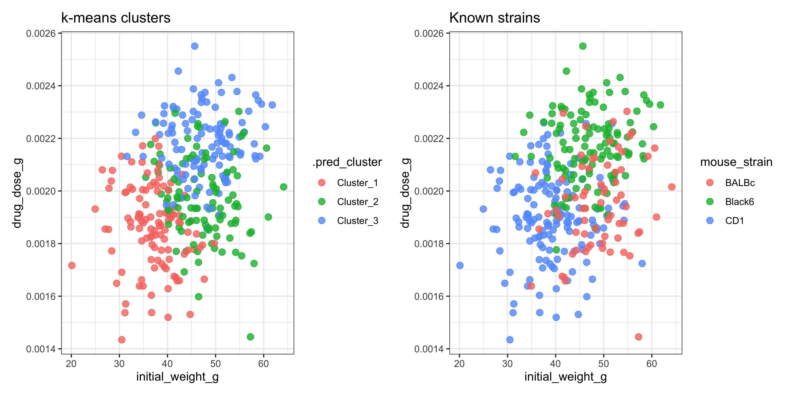
The algorithm found real structure without ever being told the labels. But notice that even with the clusters coloured, two of the strains still blur together in this raw two-variable view — no single pair of variables separates all three groups. This is exactly why a dimension-reduction method like PCA (see the extension below) is useful: it gives us the best possible two-dimensional view of all four variables at once.
ImportantTest Your Knowledge
3. Looking at the cross-tabulation above, which strain appears to be the most difficult for the k-means algorithm to separate from the others?
✗CD1
✔BALBc
✗Black6
✗All three are equally well separated
Solutions
- CD1 mice tend to be well-separated in physiological feature space.
- Correct! BALBc mice share some physiological overlap with CD1 mice, particularly in tail length, making them the most likely to be misassigned.
- Black6 mice are typically well-separated due to their distinctly higher body weight and drug dose.
- Look at the off-diagonal entries in the table — some strains have more misassignments than others.
TipExtension: Per-Observation Silhouette Plot
The silhouette plots in the tuning extension showed the average silhouette for each value of k. Here, for our fitted k = 3 model, we look at the silhouette width of each individual mouse, which reveals borderline observations. We again extract the normalised data from our fitted recipe, because the silhouette is computed from pairwise distances in the same scaled feature space the model used.
# Extract the scaled data from the fitted recipe
# We need this to compute pairwise distances for the silhouette
scaled_data <- kmeans_recipe %>%
prep() %>%
bake(new_data = dosage_clust)
# Compute silhouette widths for each observation
# Negative values indicate observations closer to a neighbouring
# cluster than their assigned cluster — possible misassignments
sil <- silhouette(
x = as.integer(dosage_clustered$.pred_cluster),
dist = dist(scaled_data)
)
fviz_silhouette(sil) +
labs(
title = "Silhouette Plot — K-Means, k = 3 (tidyclust)",
subtitle = "Negative values suggest possible misassignment"
) +
theme_minimal() cluster size ave.sil.width
1 1 112 0.19
2 2 105 0.20
3 3 116 0.26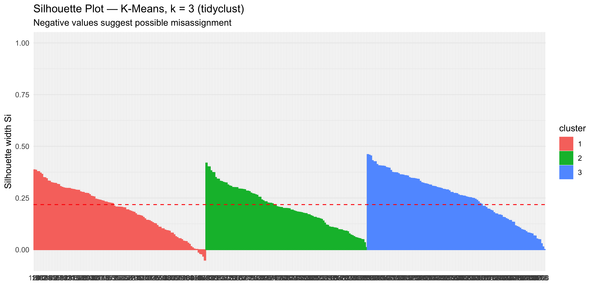
TipExtension: Visualising Clusters with PCA
Even with the clusters coloured in the activity above, two strains still blur together in the raw two-variable plots. Principal Components Analysis (PCA) is another unsupervised ML method: instead of grouping observations, it rotates our four-dimensional feature space into new axes (principal components) that capture the most variation. Projecting onto PC1 and PC2 gives us the best two-dimensional view of the structure k-means used — without ever being told the labels, just like k-means.
This allows us to plot the cluster assignments in two dimensional space and compare them directly against the true strain labels. (We reuse scaled_data — the normalised data extracted from our fitted recipe — created in the silhouette extension above.)
pca_result <- prcomp(scaled_data)
pca_plot_data <- pca_result$x %>%
as_tibble() %>%
select(PC1, PC2) %>%
bind_cols(
cluster = dosage_clustered$.pred_cluster,
mouse_strain = dosage_clustered$mouse_strain
)
p1 <- pca_plot_data %>%
ggplot(aes(x = PC1, y = PC2, colour = cluster)) +
geom_point(size = 2.5, alpha = 0.8) +
stat_ellipse(aes(group = cluster), linetype = 2) +
labs(
title = "K-Means Clusters (k = 3): PCA Projection",
subtitle = "Cluster assignments from unsupervised algorithm",
colour = "Cluster"
)
p2 <- pca_plot_data %>%
ggplot(aes(x = PC1, y = PC2, colour = mouse_strain)) +
geom_point(size = 2.5, alpha = 0.8) +
stat_ellipse(aes(group = mouse_strain), linetype = 2) +
labs(
title = "True Strain Labels: PCA Projection",
subtitle = "Ground truth for comparison with cluster plot",
colour = "Strain"
)
p1 + p2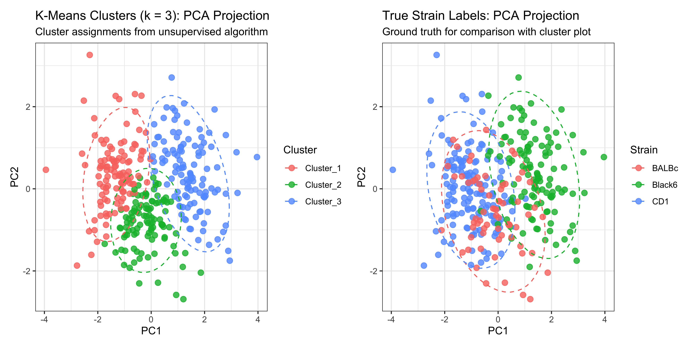
ImportantTest Your Knowledge
4. “Comparing the two PCA plots above, what does a strong visual match between the cluster assignments and the true strain labels tell us?”
✗The model has memorised the training data
✗We should increase k to get a better result
✗The silhouette score must be exactly 1.0
✔The physiological features alone contain enough information to distinguish the three strains
Solutions
- K-means is an unsupervised algorithm — it never sees the strain labels, so it cannot memorise them.
- A strong match at k = 3 supports our biological prior. Increasing k would split existing clusters unnecessarily.
- A strong visual match does not require a perfect silhouette score. Some overlap between strains is expected in real biological data.
- Correct! A strong match between unsupervised clusters and true strain labels confirms that initial weight, tail length, drug dose and weight lost are sufficient to separate the three strains — without any label information.
28.3 k-Means vs Hierarchical Clustering
The lecture also introduced hierarchical clustering as a second unsupervised approach. Rather than iterating on centroids, hierarchical clustering builds a dendrogram (‘clustering tree’) by repeatedly merging the two closest samples or clusters, starting with every sample as its own cluster and finishing with a single cluster containing everything.
The number of clusters is not fixed in advance: instead, you cut the dendrogram at a chosen distance/height, and the number of branches crossed determines the number of clusters. This is different from k-means, where num_clusters must be specified before fitting.
If you are interested in building a hierarchical clustering workflow, you can use functions hier_clust() from the tidyclust R package. See this tutorial here.
ImportantTest Your Knowledge
5. Which statement best distinguishes hierarchical clustering from k-means?
✗Hierarchical clustering requires the number of clusters to be specified before running the algorithm, just like k-means
✔Hierarchical clustering builds a tree (dendrogram) from pairwise distances, allowing you to choose the number of clusters after seeing the tree
✗Hierarchical clustering does not depend on a distance metric between samples
✗k-means always produces better clustering results than hierarchical clustering
Solutions
- This describes k-means, not hierarchical clustering — hierarchical clustering does not require k upfront.
- Correct! The dendrogram is built first, and the number of clusters is chosen afterwards by cutting the tree at a chosen height.
- Hierarchical clustering relies entirely on a distance (or similarity) metric between all pairs of samples.
- Neither method is universally better — the best choice depends on the structure of your data and whether you know the number of clusters in advance.
28.4 Tutorial Questions
Work through these questions in your own time. Questions 1–3 revisit the main workflow; questions 4–6 use the extension material.
Exploring different values of k
Refit the workflow with
num_clusters = 2. (Hint: you only need to change one number inkmeans_spec, rebuild the workflow, and re-runfit()andpredict().) Re-make the cluster-coloured plot and the cross-tabulation withtable(). Which strains get merged?Repeat with
num_clusters = 5. What happens to the Black6 mice — do they stay together, or are they split apart? Which cross-tabulation looks closest to the biological truth?Comparing your results for k = 2, 3 and 5: which k would you report, and what evidence supports your choice? When might a data-driven optimum disagree with a biological prior?
Inspect
extract_centroids()for your k = 2 and k = 5 fits. In scaled units, which variable changes the most between centroids as k increases? What does that tell you about how k-means “decides” to split a cluster?
Extension questions
Use
fviz_nbclust()on the scaled data extracted from your recipe (see the silhouette tuning extension). Which k maximises the average silhouette width? Does it agree with your answer to Q3?Following the approach from Workshop 8: save your fitted k = 3 model with
saveRDS(final_kmeans_fit, "final_kmeans_fit.rds"). Then load thenew_mouszempic_dosage_data.csvdataset, prepare it the same way (drop missing values, select the same four numeric variables), and usepredict()to assign clusters to the new mice. Cross-tabulate the predictions against the new data’s strain labels. Caveat: cluster labels are arbitrary — “Cluster_1” in your new predictions may not correspond to “Cluster_1” in training, so compare the pattern of the table, not the label names.
TipTutorial Question Answers
Expand this section to check your answers once you have attempted each question.
28.4.0.1 Question 1
kmeans_spec_k2 <- k_means(num_clusters = 2) %>%
set_engine("stats", nstart = 25)
kmeans_workflow_k2 <- workflow() %>%
add_recipe(kmeans_recipe) %>%
add_model(kmeans_spec_k2)
set.seed(5947)
fit_k2 <- kmeans_workflow_k2 %>%
fit(data = dosage_clust)
k2_clust_df <- dosage_clust %>%
bind_cols(predict(fit_k2, new_data = dosage_clust))
k2_clust_df %>%
ggplot(aes(x = initial_weight_g, y = drug_dose_g, colour = .pred_cluster)) +
geom_point(size = 2.5, alpha = 0.8) +
labs(title = "k = 2")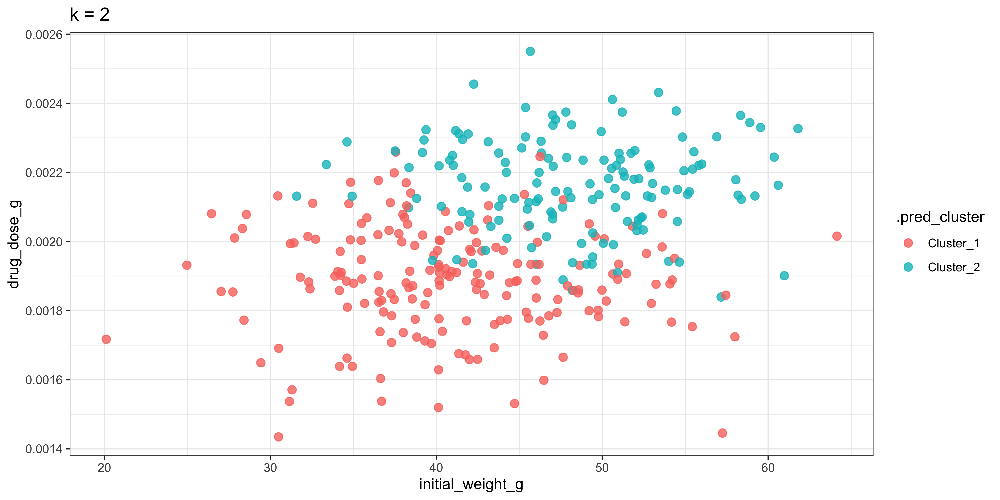
# join back to the full data to recover the strain labels
k2_noisy_dosage <- k2_clust_df %>%
left_join(noisy_dosage)Joining with `by = join_by(initial_weight_g, tail_length_mm, drug_dose_g,
weight_lost_g)`table(k2_noisy_dosage$.pred_cluster, k2_noisy_dosage$mouse_strain)
BALBc Black6 CD1
Cluster_1 45 5 138
Cluster_2 23 114 8At k = 2, one cluster contains almost all Black6 mice, while the other cluster merges most CD1 mice with a large share of BALBc mice. So BALBc and CD1 are largely merged into a single cluster and Black6 is separated: a worse biological solution than k = 3, even though it scores better geometrically.
28.4.0.2 Question 2
kmeans_spec_k5 <- k_means(num_clusters = 5) %>%
set_engine("stats", nstart = 25)
kmeans_workflow_k5 <- workflow() %>%
add_recipe(kmeans_recipe) %>%
add_model(kmeans_spec_k5)
set.seed(5947)
fit_k5 <- kmeans_workflow_k5 %>%
fit(data = dosage_clust)
k5_clust_df <- dosage_clust %>%
bind_cols(predict(fit_k5, new_data = dosage_clust))
k5_clust_df %>%
ggplot(aes(x = initial_weight_g, y = drug_dose_g, colour = .pred_cluster)) +
geom_point(size = 2.5, alpha = 0.8) +
labs(title = "k = 5")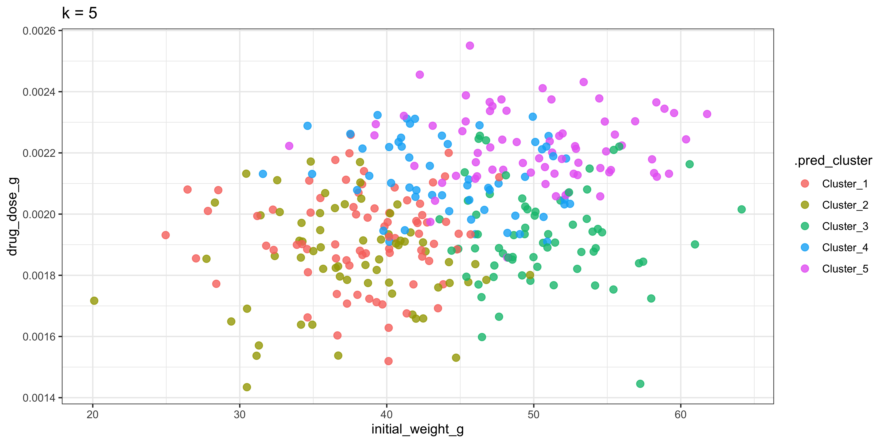
# join back to the full data to recover the strain labels
k5_noisy_dosage <- k5_clust_df %>%
left_join(noisy_dosage)Joining with `by = join_by(initial_weight_g, tail_length_mm, drug_dose_g,
weight_lost_g)`table(k5_noisy_dosage$.pred_cluster, k5_noisy_dosage$mouse_strain)
BALBc Black6 CD1
Cluster_1 8 5 63
Cluster_2 12 2 51
Cluster_3 37 3 26
Cluster_4 6 45 4
Cluster_5 5 64 2At k = 5, the Black6 mice are split into two clusters, the CD1 mice are fragmented across several clusters, and most BALBc mice end up lumped together with CD1 mice in one cluster. Splitting strains apart like this adds no biological meaning — the algorithm is carving up natural within-strain variation. The k = 3 cross-tabulation (from the main workflow) is closest to the biological truth.
28.4.0.3 Question 3
k = 3 is the best choice: it matches the biological prior of three strains and the cross-tabulation recovers those strains without the under-splitting of k = 2 or the over-splitting of k = 5. This also illustrates when a data-driven optimum can disagree with a biological prior: when two true groups (here BALBc and CD1) overlap in feature space, geometric criteria such as the silhouette score prefer to merge them, even when merging is biologically wrong. The data-driven optimum should inform, not dictate, the choice of k.
28.4.0.4 Question 4
# Centroids for k = 2
extract_centroids(fit_k2)# A tibble: 2 × 5
.cluster initial_weight_g tail_length_mm drug_dose_g weight_lost_g
<fct> <dbl> <dbl> <dbl> <dbl>
1 Cluster_1 -0.415 0.413 -0.602 -0.536
2 Cluster_2 0.538 -0.535 0.781 0.695# Centroids for k = 5
extract_centroids(fit_k5)# A tibble: 5 × 5
.cluster initial_weight_g tail_length_mm drug_dose_g weight_lost_g
<fct> <dbl> <dbl> <dbl> <dbl>
1 Cluster_1 -0.764 1.02 -0.414 -0.0207
2 Cluster_2 -0.881 -0.294 -0.770 -1.05
3 Cluster_3 0.859 0.512 -0.397 -0.349
4 Cluster_4 0.0387 -1.30 0.586 0.181
5 Cluster_5 0.796 -0.288 1.06 1.17 The centroids separate most along initial_weight_g, drug_dose_g and weight_lost_g (at k = 5 these span roughly -0.9 to +0.9 in scaled units), while tail_length_mm varies less consistently. This shows that k-means splits clusters along whichever dimensions reduce within-cluster distances the most: it has no biological knowledge, it simply carves up feature space where points are most spread out.
28.4.0.5 Question 5
scaled_data <- kmeans_recipe %>%
prep() %>%
bake(new_data = dosage_clust)
fviz_nbclust(scaled_data, kmeans, method = "silhouette")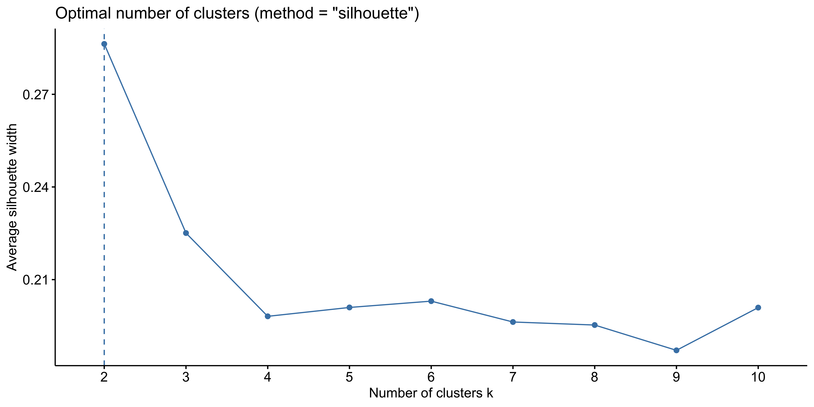
The average silhouette width is maximised at k = 2, not at our biological prior of k = 3, so it does not agree with the answer to Q3. This is common and instructive: the silhouette criterion rewards well-separated clusters, so when two groups (here BALBc and CD1) lie close together in feature space it prefers to merge them which is a worse biological solution even though it scores better geometrically. The silhouette score should inform, not dictate, the choice of k; with a strong biological prior we still select k = 3.
28.4.0.6 Question 6
saveRDS(final_kmeans_fit, "final_kmeans_fit.rds")
loaded_model <- readRDS("final_kmeans_fit.rds")
new_dosage <- read_csv("data/new_mousezempic_dosage_data.csv")
new_clust <- new_dosage %>%
drop_na() %>%
select(initial_weight_g, tail_length_mm, drug_dose_g, weight_lost_g)
new_predicted <- new_clust %>%
bind_cols(predict(loaded_model, new_data = new_clust))
new_df <- new_dosage %>%
left_join(
new_predicted,
by = c("weight_lost_g", "drug_dose_g", "tail_length_mm", "initial_weight_g")
)
table(new_df$.pred_cluster, new_df$mouse_strain)The cross-tabulation should show the same pattern as the training data (each cluster dominated by one strain), even though the “Cluster_1/2/3” labels themselves may be permuted, because cluster labels are assigned arbitrarily at each fit.
28.5 Summary
Today we’ve revised the key components of machine learning using tidymodels in R: creating a recipe, specifying a model, creating a workflow and fitting a model as we learned in workshop 8 but instead of training a supervised random forest classiifer using known strain labels, here you trained an unsupervised k-means clustering algorithm to recover those same groupings without any labels, discovering that the physiological features alone carry enough signal to distinguish the three strains.
Here’s what we covered in this session:
- Differences between supervised and unsupervised machine learning in the
tidymodelsworkflow - What a k-means clustering algorithm is and how we can train one
- Creating a recipe for an unsupervised machine learning algorithm where we do not have an outcome variable:
~ predictor variables - Specifying a k-means clustering algorithm with a set value for
k(and optionally: when we do not set a value ofk) - Fitting the model on our dataset
- Comparing our clustering results with our known mouse strain results
If you’d like to learn more, look at the further reading for this week, which includes links to many Machine Learning resources.
You can download the handout from our tutorial session here: